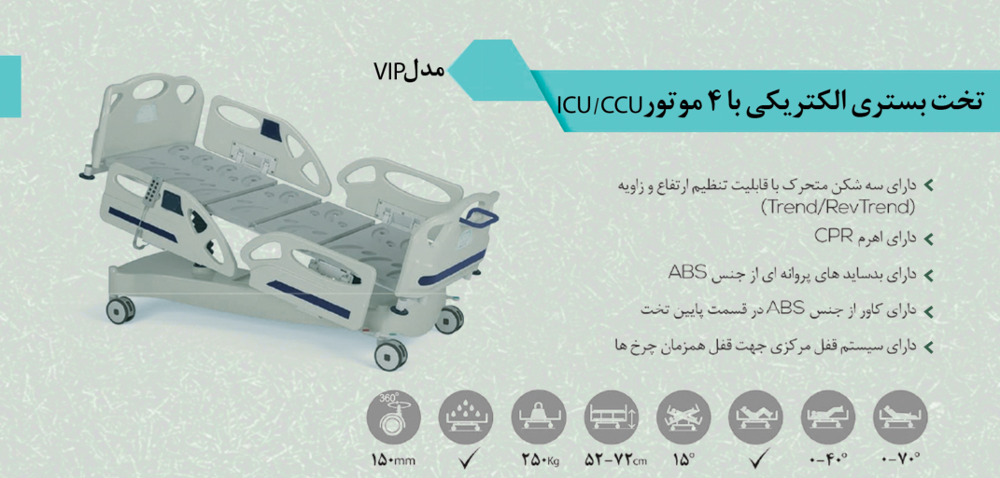

SIMOT · DIGITAL CATALOG
Hospital care,
made precise.
A source-faithful catalog of beds and patient-room equipment from the SIMOT Hospital Bed catalog.
Explore catalog ↓
01 / 13 Source imageryPRODUCT LIBRARY
Find your fit.
No products match your search.
DOCUMENTATION NOTE
Built from the source.
This catalog uses the two-page PDF supplied in the repository. Product images are extracted from the PDF itself. Technical fields are only included where visible in the source; unresolved icon values are explicitly flagged rather than inferred.
Open source PDF ↗